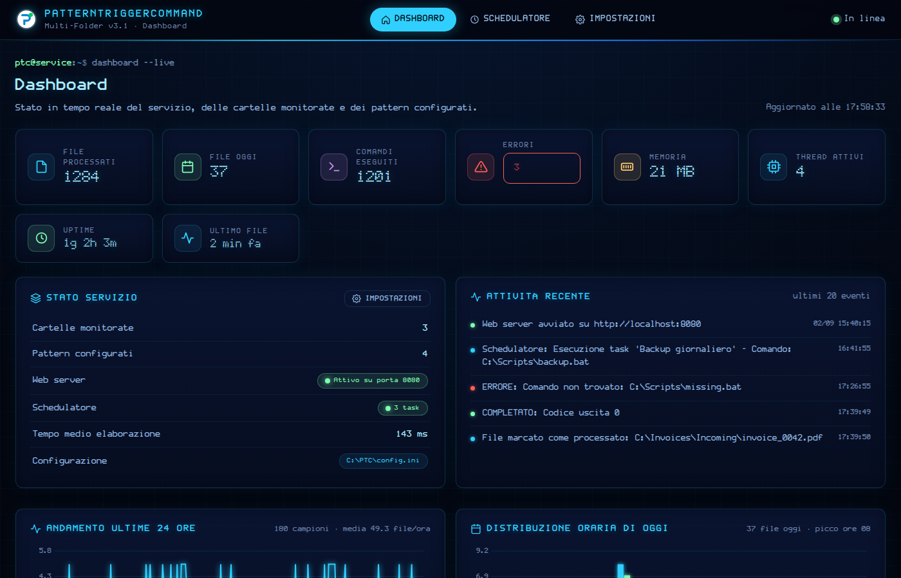
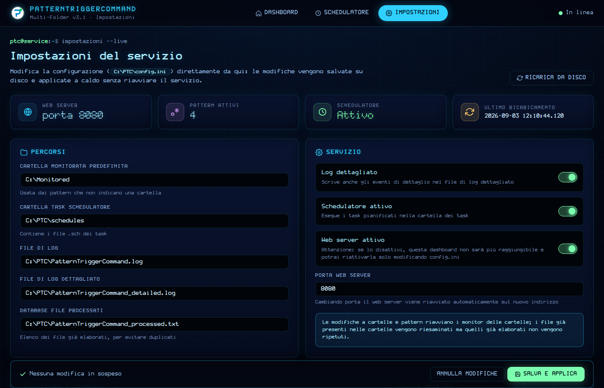

umeglio@miranet:~$ PatternTriggerCommand.exe install — service installed, dashboard on :8080
PatternTriggerCommand is a native C++ Windows service that watches multiple folders, recognises files with regular expressions and executes the associated command with the file as parameter. A parametric scheduler, a live web dashboard set in miraFONT and hot-reloadable settings come built in. PatternTriggerCommand è un servizio Windows in C++ nativo che sorveglia più cartelle, riconosce i file con espressioni regolari ed esegue il comando associato passando il file come parametro. Schedulatore parametrico, dashboard web dal vivo composta in miraFONT e impostazioni applicabili a caldo sono inclusi.
// architecturearchitettura
The service is a single statically linked executable. Every monitored folder gets its own thread blocked on ReadDirectoryChangesW; a matched file is checked against the processed-files database, waited for until it is no longer locked and handed to the command. The scheduler, the metrics sampler and the HTTP server run on their own threads and talk to the dashboard through JSON APIs. Nothing to install besides the .exe: no .NET, no Java, no external libraries.
Il servizio è un unico eseguibile a link statico. Ogni cartella monitorata ha il proprio thread bloccato su ReadDirectoryChangesW; un file che corrisponde viene confrontato con il database dei file già elaborati, atteso finché non è più in uso e consegnato al comando. Schedulatore, campionatore delle metriche e server HTTP girano su thread propri e dialogano con la dashboard tramite API JSON. Nulla da installare oltre all'.exe: niente .NET, niente Java, nessuna libreria esterna.
┌────────────────────────────────────┐ │ PatternTriggerCommand.exe (SCM) │ ├────────────────────────────────────┤ │ ServiceWorkerThread │ │ ├─ FolderMonitor × N RDCW │ │ │ └─ regex match → ExecuteCommand │ ├─ SchedulerWorker (.sch tasks) │ │ ├─ MetricsUpdateWorker (1/min) │ │ └─ WebServerWorker Winsock2 │ │ └─ 1 thread / connection │ ├────────────────────────────────────┤ │ / dashboard /scheduler /settings │ │ /api/metrics /api/stats /api/config │ /fonts/miraFONT-*.woff (embedded)│ ├────────────────────────────────────┤ │ C:\PTC\config.ini · schedules\*.sch │ processed.txt · *.log │ └────────────────────────────────────┘
// featuresfunzionalità
Each PatternN=Folder|Regex|Command line binds a folder, a case-insensitive regular expression and the command to run. Alternations with | are supported when the folder is explicit; an initial scan handles files already present.Ogni riga PatternN=Cartella|Regex|Comando lega una cartella, una regex case-insensitive e il comando da eseguire. Le alternanze con | sono supportate se la cartella è esplicita; una scansione iniziale gestisce i file già presenti.
A persistent database of processed files prevents re-runs; the service waits for a file to be released before launching the command and records exit codes, timings and errors.Un database persistente dei file elaborati evita ripetizioni; il servizio attende che il file sia libero prima di lanciare il comando e registra codici di uscita, tempi ed errori.
Weekday, hour and minute triggers or "every N seconds" intervals, stored as .sch files and managed from the web page: create, edit, duplicate, toggle, execution history with filters.Trigger per giorno, ora e minuto oppure intervalli "ogni N secondi", salvati come file .sch e gestiti dalla pagina web: crea, modifica, duplica, attiva, storico esecuzioni con filtri.
Dark miraNET theme, live counters, activity feed, folder and pattern tables, charts of the last 24 hours, hourly distribution, memory, most active patterns and scheduler outcome. Fonts are embedded in the binary: it works offline.Tema scuro miraNET, contatori dal vivo, feed attività, tabelle di cartelle e pattern, grafici delle ultime 24 ore, distribuzione oraria, memoria, pattern più attivi ed esito dello schedulatore. I font sono incorporati nel binario: funziona anche senza internet.
Every key of config.ini and the whole pattern table are editable from /settings. Saving is atomic; monitors restart with the new patterns and, if the port changes, the web server restarts itself on the new address.Ogni chiave di config.ini e l'intera tabella dei pattern si modificano da /settings. Il salvataggio è atomico; i monitor ripartono con i nuovi pattern e, se cambia la porta, il web server si riavvia da solo sul nuovo indirizzo.
MIT licensed, single executable, Windows 7 to Windows Server 2022+. Install, uninstall, test in console, status and reset are all sub-commands of the same binary.Licenza MIT, un solo eseguibile, da Windows 7 a Windows Server 2022+. Installazione, disinstallazione, prova in console, stato e reset sono sotto-comandi dello stesso binario.
// dashboard
Three pages served by the built-in HTTP server: the dashboard with statistics, the scheduler and the settings editor. Same graphic language as this page: miraFONT Spline for text, miraFONT Linear for code and prompts, miraFONT Dots for the numbers.Tre pagine servite dal server HTTP integrato: la dashboard con le statistiche, lo schedulatore e l'editor delle impostazioni. Stesso linguaggio grafico di questa pagina: miraFONT Spline per il testo, miraFONT Linear per codice e prompt, miraFONT Dots per i numeri.


// quick start
mingw32-make # release build mingw32-make fonts # regenerate miraFONT_embedded.h (python 3)
C:\PTC\config.ini; edit it by hand or from the web page:al primo avvio viene creato C:\PTC\config.ini; modificalo a mano o dalla pagina web:[Settings] DefaultMonitoredFolder=C:\Monitored WebServerPort=8080 SchedulerEnabled=true [Patterns] # Name=Folder|Regex|Command (or Regex|Command for the default folder) Pattern1=C:\Invoices\Incoming|^invoice.*\.pdf$|C:\Scripts\process_invoice.bat Pattern2=C:\Reports\Monthly|^[0-9]{8}_.*DEMAT.*\.csv$|C:\Scripts\process_demat.bat
PatternTriggerCommand.exe install # registers the Windows service PatternTriggerCommand.exe test # console mode, CTRL+C to stop PatternTriggerCommand.exe status # service state and configuration Dashboard: http://localhost:8080 Scheduler: http://localhost:8080/scheduler Settings: http://localhost:8080/settings
| PropertyProprietà | ValueValore |
|---|---|
| LanguageLinguaggio | Native C++11, Win32 API, Winsock2, PSAPI — no runtime, no external librariesC++11 nativo, API Win32, Winsock2, PSAPI — nessun runtime, nessuna libreria esterna |
| BuildCompilazione | MinGW (g++), -static, Makefile · 32 and 64-bit32 e 64 bit |
| File watchingMonitoraggio file | ReadDirectoryChangesW per folder, initial scan, lock wait, processed-files databaseper cartella, scansione iniziale, attesa sblocco, database file elaborati |
| Web serverWeb server | Built-in HTTP/1.1, one thread per connection, JSON APIs, fonts embedded (base64 WOFF)HTTP/1.1 integrato, un thread per connessione, API JSON, font incorporati (WOFF base64) |
| RequirementsRequisiti | Windows 7+ / Windows Server 2008 R2+, administrator rights to install the servicediritti di amministratore per installare il servizio |
| LicenseLicenza | MIT |
// typographytipografia
miraFONT is the original typeface designed by Umberto Meglio from a 5×7 node matrix, released as CC0 public domain in three renderings. This page and the service dashboard use all three:miraFONT è il carattere tipografico originale disegnato da Umberto Meglio a partire da una matrice di nodi 5×7, rilasciato in pubblico dominio CC0 in tre resa grafiche. Questa pagina e la dashboard del servizio le usano tutte e tre:
The four WOFF cuts used by the dashboard live in fonts/miraFONT/ and are compiled into the executable by tools/embed_fonts.py, so the pages render identically on a server with no internet access.I quattro tagli WOFF usati dalla dashboard sono in fonts/miraFONT/ e vengono compilati nell'eseguibile da tools/embed_fonts.py: le pagine si vedono identiche anche su un server senza accesso a internet. miraFONT ↗